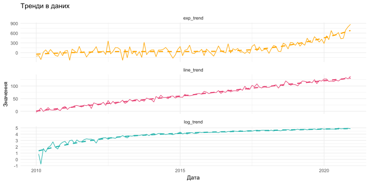
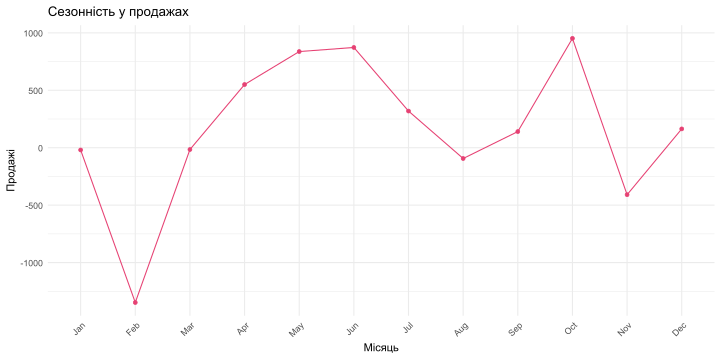
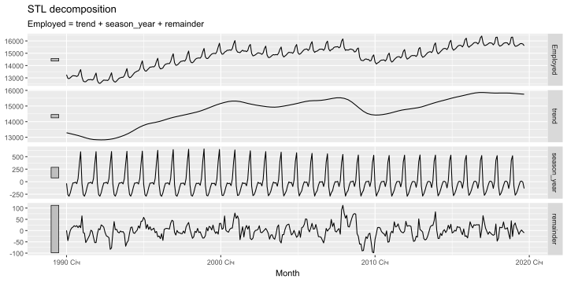
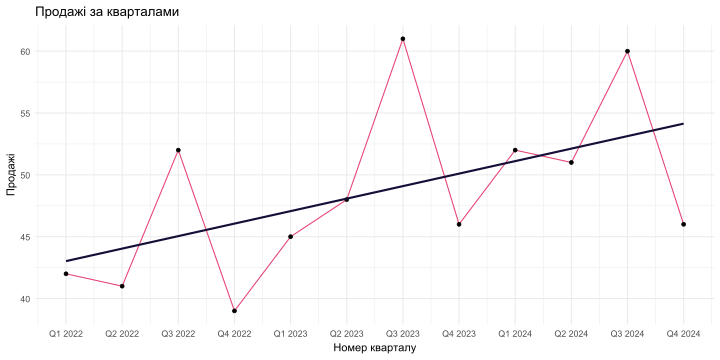
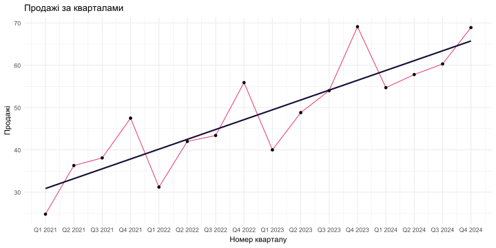
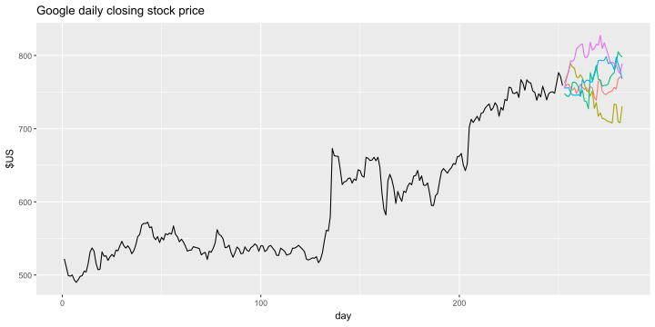

| Продажі за кварталами | ||
|---|---|---|
| Дані за 2022-2024 роки | ||
Квартали
|
Продажі | |
| Рік | Квартал | |
| 2022 | Q1 | 42 |
| 2022 | Q2 | 41 |
| 2022 | Q3 | 52 |
| 2022 | Q4 | 39 |
| 2023 | Q1 | 45 |
| 2023 | Q2 | 48 |
| 2023 | Q3 | 61 |
| 2023 | Q4 | 46 |
| 2024 | Q1 | 52 |
| 2024 | Q2 | 51 |
| 2024 | Q3 | 60 |
| 2024 | Q4 | 46 |
Часові ряди
Математика для керівника
Ігор Мірошниченко
Міжнародний інститут бізнесу
Компоненти часових рядів
Вважається, що в часових рядах є чотири компоненти:
- тренд, \(T\);
- сезонна складова, \(S\);
- циклічна складова, \(C\);
- випадкова компонента, \(R\).
Тренд
Тренд — це загальна тенденція до зростання або падіння, яка спостерігається в даних протягом тривалого періоду часу.
Типові приклади трендів включають:
- зростання цін на акції протягом кількох років;
- збільшення населення в місті протягом десятиліть;
- зростання температури внаслідок глобального потепління.
Основні види трендів:
- Лінійний тренд: дані зростають або падають лінійно, наприклад, зростання доходів компанії протягом кількох років.
- Логістичний тренд: дані зростають або падають, але зменшують темп з часом, наприклад, зростання продажів нового продукту, яке спочатку швидке, а потім сповільнюється.
- Експоненціальний тренд: дані зростають або падають експоненціально, наприклад, зростання кількості користувачів соціальної мережі протягом кількох місяців.
Тренд: візуалізація
Сезонність
Сезонність — це регулярні коливання в даних, які повторюються через певні проміжки часу, зазвичай протягом року.
Типові приклади сезонності включають:
- збільшення продажів морозива влітку та зменшення в зимку;
- збільшення кількості туристів влітку та зменшення в зимку;
- збільшення кількості покупок подарунків перед святами, такими як Різдво або День святого Валентина.
Сезонність: візуалізація
Циклічність
Циклічність — це коливання в даних, які повторюються через нерегулярні проміжки часу, зазвичай пов’язані з економічними або соціальними змінами.
Типові приклади циклічності включають:
- економічні цикли, такі як рецесії та відновлення;
- циклічні зміни в попиті на товари та послуги, такі як збільшення попиту на автомобілі під час економічного зростання та зменшення під час рецесії;
- циклічні зміни в попиті на енергію, такі як збільшення попиту на електроенергію влітку через кондиціонери та зменшення взимку.
Випадкова складова
Випадкова складова — це випадкові коливання в даних, які не можуть бути пояснені трендом, сезонністю або циклічністю. Вони можуть бути викликані різними факторами, такими як випадкові події, помилки вимірювання або інші непередбачувані обставини.
Загальна візуалізація
Моделі декомпозиції
Моделі декомпозиції дозволяють розділити часовий ряд на його складові частини, такі як тренд, сезонність та випадкові коливання. Це допомагає краще зрозуміти структуру даних і зробити прогнози.
Види моделей декомпозиції:
- Адітивна модель: \(Y_t = T_t + S_t + C_t + R_t\), де \(Y_t\) — значення часового ряду в момент часу \(t\), \(T_t\) — тренд, \(S_t\) — сезонна складова, \(C_t\) — циклічна складова, \(R_t\) — випадкова складова.
- Мультиплікативна модель: \(Y_t = T_t \cdot S_t \cdot C_t \cdot R_t\), де всі складові частини взаємодіють між собою.
Адитивна модель
- Продажі (\(Y\)) = 21 109 гривень
- Тренд (\(T\)) = 20 000 гривень
- Сезонний фактор (\(S\)) = 1500 гривень (хороший місяць для продажів)
- Циклічний (\(C\)) = -800 гривень (спад ділової активності)
- Випадкова (\(R\)) = 409 гривень (випадкові коливання)
\[ Y = T + S + C + R = 20 000 + 1500 - 800 + 409 = 21 109 \]
Мультиплікативна модель
- Продажі (\(Y\)) = 21 109 гривень
- Тренд (\(T\)) = 20 000 гривень
- Сезонний фактор (\(S\)) = 1.1 (хороший місяць для продажів, +10% до тренду)
- Циклічний (\(C\)) = 0.95 (спад ділової активності, -5% до тренду)
- Випадкова (\(R\)) = 1.01 (випадкові коливання, +1% до тренду)
\[ Y = T \cdot S \cdot C \cdot R = 20 000 \cdot 1.1 \cdot 0.95 \cdot 1.01 = 21 109 \]
Адитивна vs. Мультиплікативна модель
В адитивній моделі всі компоненти знаходяться в тих же одиницях, що і вихідна змінна (у наведеному вище прикладі).
У мультиплікативній моделі тренд виражений в тих же одиницях, що і змінна, а інші три компоненти є просто множниками.
Декомпозиція та прогнозування
Метод полягає в тому, щоб прогнозувати кожен компонент окремо, а потім об’єднувати їх через одну з моделей, щоб сформувати прогноз самої змінної.
- Прогнозування тренду: використовувати методи екстраполяції, такі як лінійна регресія або ковзне середнє.
- Прогнозування сезонності: використовувати історичні дані для виявлення сезонних патернів.
- Прогнозування циклічності: аналізувати економічні та соціальні фактори, які можуть вплинути на циклічні коливання.
- Прогнозування випадкової складової: використовувати статистичні методи для оцінки випадкових коливань.
Приклад 1

\[ y = 42 + 1.01 \cdot t \]
Приклад 2
| Продажі за кварталами | ||
|---|---|---|
| Дані за 2021-2024 роки | ||
Квартали
|
Продажі | |
| Рік | Квартал | |
| 2021 | Q1 | 24.8 |
| 2021 | Q2 | 36.3 |
| 2021 | Q3 | 38.1 |
| 2021 | Q4 | 47.5 |
| 2022 | Q1 | 31.2 |
| 2022 | Q2 | 42.0 |
| 2022 | Q3 | 43.4 |
| 2022 | Q4 | 55.9 |
| 2023 | Q1 | 40.0 |
| 2023 | Q2 | 48.8 |
| 2023 | Q3 | 54.0 |
| 2023 | Q4 | 69.1 |
| 2024 | Q1 | 54.7 |
| 2024 | Q2 | 57.8 |
| 2024 | Q3 | 60.3 |
| 2024 | Q4 | 68.9 |

\[ b_1 = \frac{n \sum t_i y_i - \sum t_i \sum y_i}{n \sum t_i^2 - (\sum t_i)^2} = 2.3244 \\ b_0 = \bar{y} - b_1 \cdot \bar{t} = 28.54 \\ y = 28.54 + 2.3244 \cdot t \]
Оцінювання сезонності
Адитивна модель:
\[Y = T + S \\ S = Y - T \]
Мультиплікативна модель:
\[ Y = T \cdot S \\ S = \frac{Y}{T} \]
Приклад 3
| Продажі за кварталами | ||
|---|---|---|
| Дані за 2022-2024 роки | ||
Квартали
|
Продажі | |
| Рік | Квартал | |
| 2022 | Q1 | 42 |
| 2022 | Q2 | 41 |
| 2022 | Q3 | 52 |
| 2022 | Q4 | 39 |
| 2023 | Q1 | 45 |
| 2023 | Q2 | 48 |
| 2023 | Q3 | 61 |
| 2023 | Q4 | 46 |
| 2024 | Q1 | 52 |
| 2024 | Q2 | 51 |
| 2024 | Q3 | 60 |
| 2024 | Q4 | 46 |
\[ T = 42 + 1.01 \cdot t \]
\[ t = 1; \ T = 42 + 1.01 \cdot 1 = 43.01 \] \[ S = \frac{Y}{T} = \frac{42}{43.01} = 0.976 \] \[ t = 12; \ T = 42 + 1.01 \cdot 12 = 54.12 \] \[ S = \frac{Y}{T} = \frac{46}{54.12} = 0.850 \]
| Рік | Q1 | Q2 | Q3 | Q4 |
|---|---|---|---|---|
| 2022 | 0.9765 | 0.9314 | 1.1548 | 0.8471 |
| 2023 | 0.9564 | 0.9988 | 1.2431 | 0.9185 |
| 2024 | 1.0178 | 0.9789 | 1.1297 | 0.8500 |
| Всього | 2.9507 | 2.9091 | 3.5276 | 2.6156 |
| Середнє | 0.9836 | 0.9697 | 1.1759 | 0.8719 |
Кінцевий прогноз
\[ \hat{Y} = \hat{T} + \hat{S} \]
\[ \hat{Y} = \hat{T} \cdot \hat{S} \]
Ковзна середня
Ще один варіант визначення тренду — ковзна середня.
\[ T_t = \frac{\sum_{j=-k}^{k} Y_{t+j}}{m} \]
де \(m\) — кількість спостережень, \(k\) — кількість спостережень з кожного боку від поточного.

Частоти часових рядів
| Часовий ряд | Частота | Приклад |
|---|---|---|
| Щохвилинний | 60 | Курс валют кожну хвилину |
| Щоденний | 7 | Температура повітря кожен день |
| Щоквартальний | 4 | Продажі компанії кожен квартал |
| Щомісячний | 12 | Кількість відвідувачів сайту кожен місяць |
| Щотижневий | 52 | Кількість продажів кожен тиждень |
Множинні прогнози
Якість прогнозів
\[ \text{MAE} = \frac{1}{n} \sum_{t=1}^{n} |Y_t - \hat{Y}_t| \]
\[ \text{RMSE} = \sqrt{\frac{1}{n} \sum_{t=1}^{n} (Y_t - \hat{Y}_t)^2} \]
\[ \text{MAPE} = \frac{1}{n} \sum_{t=1}^{n} \left| \frac{Y_t - \hat{Y}_t}{Y_t} \right| \cdot 100\% \]

Дякую за увагу!

Математика для керівника